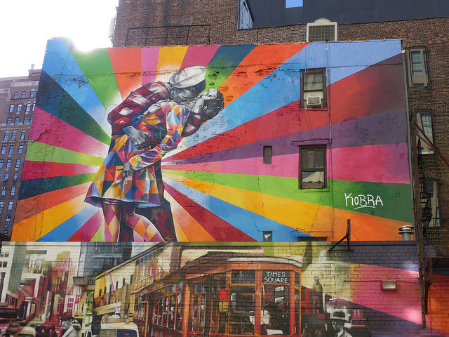
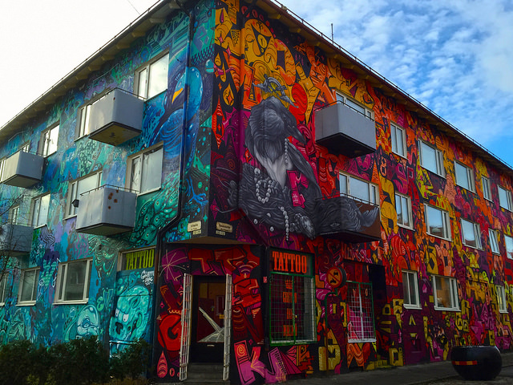
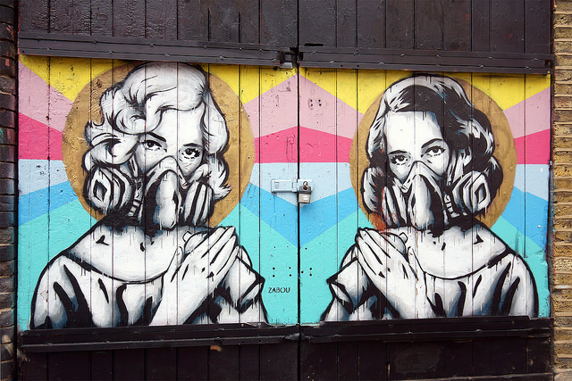

Street Art Carousel

"Kobra street art, New York" by
Duncan C
licensed under
CC by 2.0

"Street art" by
Maria Eklind
licensed under
CC by 2.0

"Young women in industrial masks" by
Artjouer Street Art
licensed under
CC by 2.0
"Portsmouth Street Art" by
Steven Vacher
licensed under
CC by 2.0
"Half skull: Street Art in Shoreditch" by
Artjouer Street Art
licensed under
CC by 2.0
❮
❯